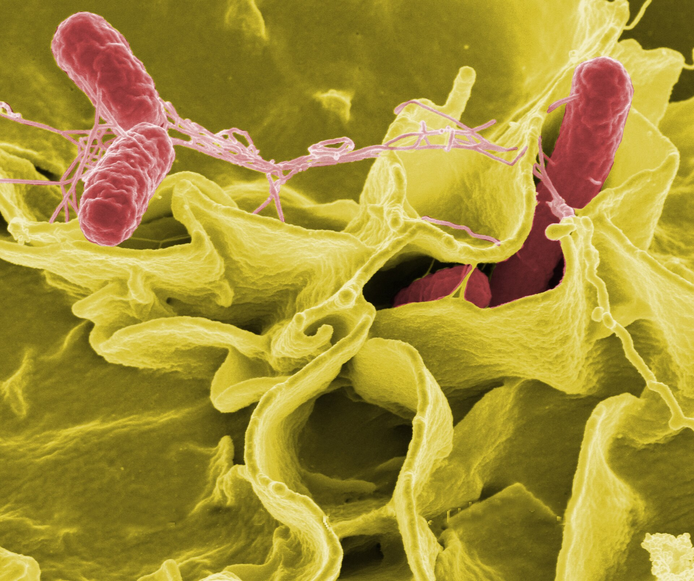
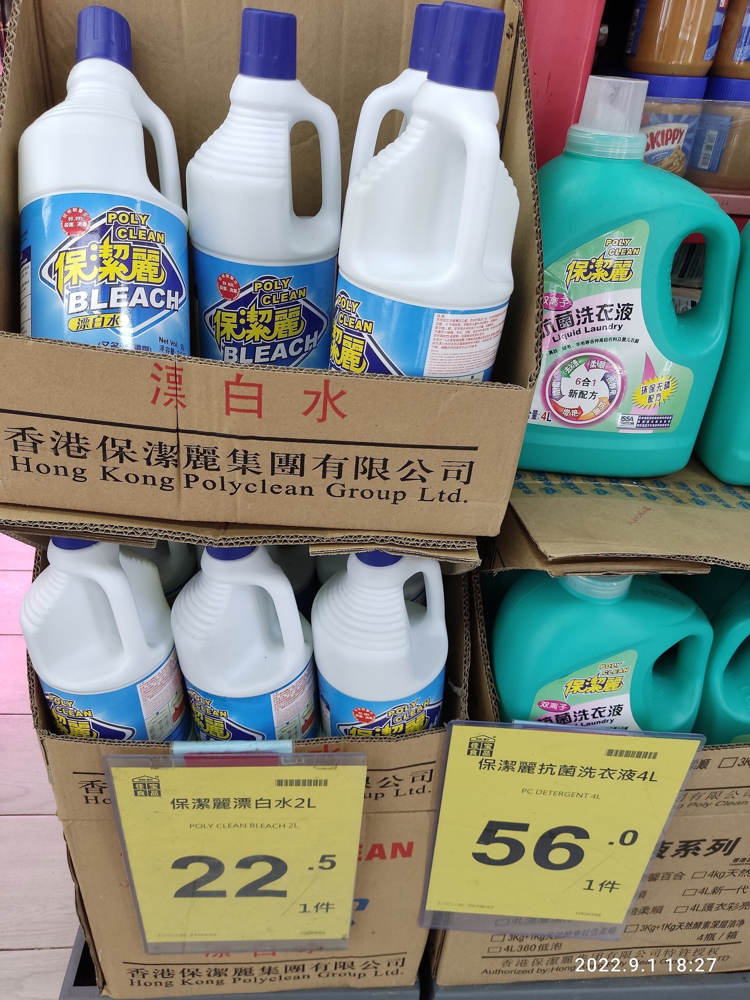
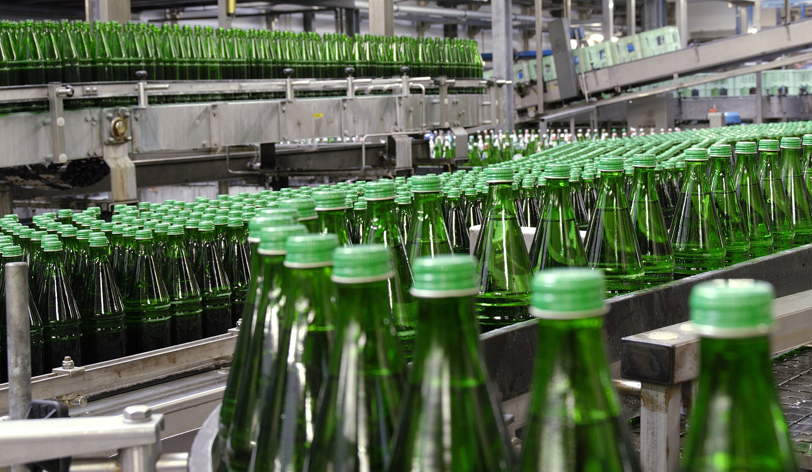
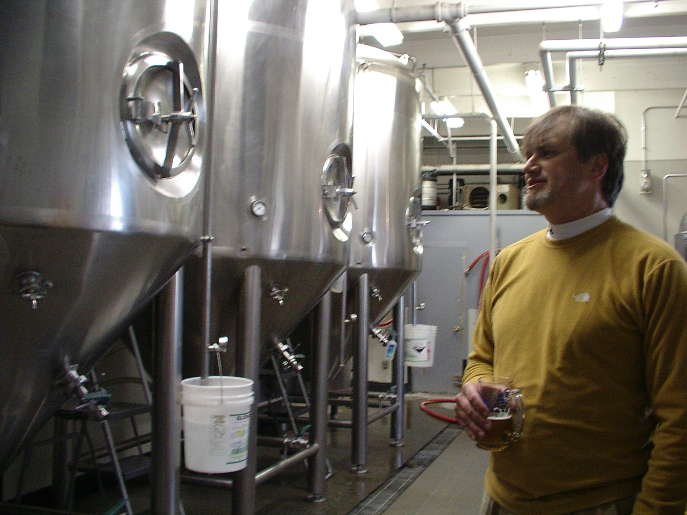
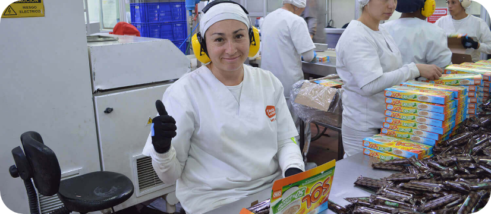
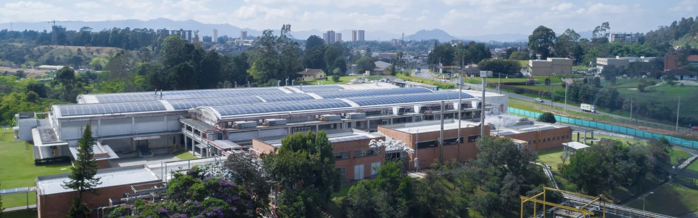
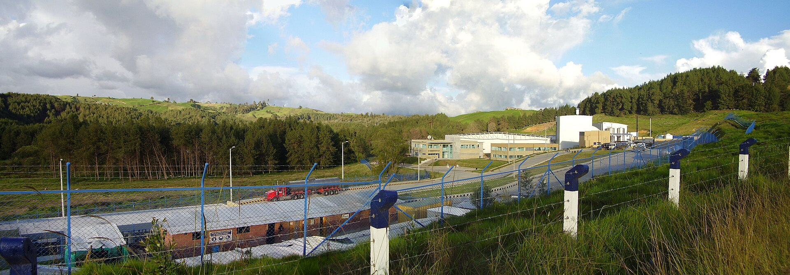
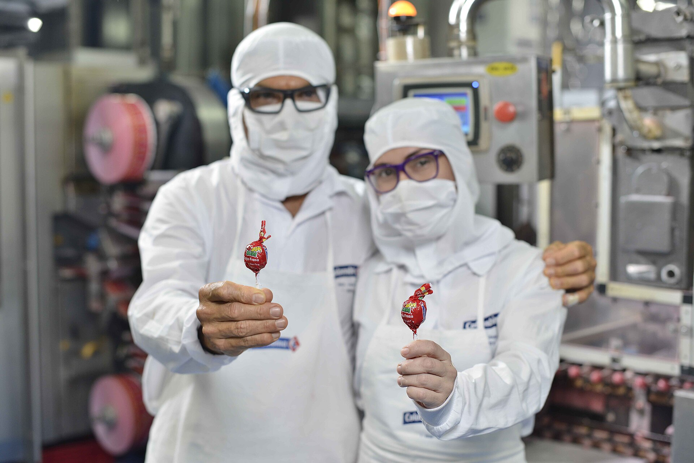

“Es la garantía de que los alimentos no causarán daño al consumidor…”
Que comerlo no me enferme.
Exposición · Gerencia de la Calidad 2026-3
Lo que separa un alimento seguro de una intoxicación.
Ruta de la exposición
20:00 de exposición + 8–10 min de actividad en el celular · BPM Arena
Inocuidad · Calidad · Trazabilidad



Res. 2674 de 2013 · Art. 3 · Definiciones
“Son los principios básicos y prácticos generales de higiene en la manipulación, preparación, elaboración, envasado, almacenamiento, transporte y distribución de alimentos para consumo humano…”
En simple: las reglas de higiene que se cumplen desde que entra la materia prima hasta que el alimento llega a la mesa.
“Es la garantía de que los alimentos no causarán daño al consumidor…”
Que comerlo no me enferme.
“Es toda persona que interviene directamente, en forma permanente u ocasional…”
Del operario de planta al mesero que sirve.
Derogado · Art. 55
Riesgo: Alto · Medio · Menor.
Art. 37: trámite automático.
BPH + HACCP + cultura de inocuidad.
Art. 2 · Ámbito de aplicación
En todo el territorio nacional, a:
Título II · Condiciones básicas de higiene
Lo vemos hoy

Art. 8–10 · Equipos
Art. 11–14 · Personal
5 NO en la línea · Art. 14
Art. 24 · Personal técnico idóneo
Art. 14 · 14 numerales en 3 grupos
Con enfermedad infectocontagiosa o afección en la piel: fuera de la manipulación directa · num. 12
Art. 26 · Plan de Saneamiento
Art. 28 · Almacenamiento
PEPS · primero en entrar, primero en salir
Video · Alimentos con Calidad
Res. 719/2015 · Res. 2674 Art. 39 y 41
Renovación: 3 meses antes
Trámite automático, revisión posterior · Res. 3168/2015
Dato: la sal (13.1.1) también es Alto riesgo
Juego · 2 equipos
Hay 14 fallas y 13 trampas que sí cumplen. Por turnos, cada equipo señala algo: falla +1 · trampa −1.
Clic en "Iniciar" y que el Equipo A señale primero.
Ley 9 de 1979 · Art. 577
mod. Art. 98 DL 2106 de 2019
Síntesis · si mañana abres un negocio de alimentos
¿El producto avanza de lo sucio a lo limpio, sin devolverse?
Art. 6–7¿Mis equipos son lisos, inertes y fáciles de limpiar?
Art. 8–10¿Cada manipulador tiene certificado médico y ≥ 10 h de capacitación al año?
Art. 11–12¿Están por escrito los 4 programas de saneamiento?
Art. 26¿La bodega rota PEPS y las estibas están lejos de piso y paredes?
Art. 28¿Mi producto tiene RSA, PSA o NSA vigente según su riesgo?
Res. 719 · Art. 39 y 41Manizales en el mapa

BPM · HACCP · FSSC 22000 · BASC
casaluker.com/politicas-y-certificaciones
BPM prerrequisito · FSSC 22000 · BRCGS · IFS
gruponutresa.com/politicas
BPM · HACCP · Labs ONAC ISO/IEC 17025
alpina.com/es/blog/con-nueva-certificacion…
BPM · FSSC 22000 · BRCGS · FSMA Ready
colombina.com/quienes-somosAntes del quiz · 6 palabras
Cierre ejecutivo
“Hay que tener 540 / 220 lux”
Art. 7 no fija lux. Exige luz adecuada y protegida.
“El Decreto 3075 sigue vigente”
Derogado por el Art. 55 de la Res. 2674.
“Todos los registros duran igual”
RSA 5 · PSA 7 · NSA 10 años.
Actividad en vivo · 8 preguntas
PIN de sala
26740 conectados Buscando servidor…
Abrir consola del anfitrión →—
Escanea · escribe tu apodo · 20–25 s por pregunta
Normativa y video
Empresas, imágenes y plan B